Somente os parágrafos biográficos de “A Artista”. Mesmos textos, cores e capitular. Capturas em viewports de mesma largura e altura de 1000 px; imagens mostram a seção completa.
Antes: desenvolvimento (o indicador N pertence ao Next.js). Depois: build de produção.
Lora 17px, entrelinha 28.9px; esquerda; sem hifenização ou overflow.
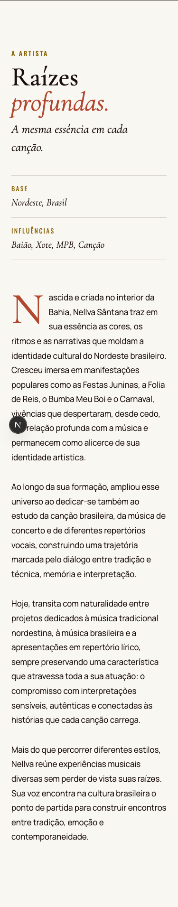
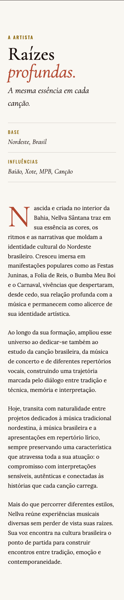
Lora 17px, entrelinha 28.9px; esquerda; sem hifenização ou overflow.
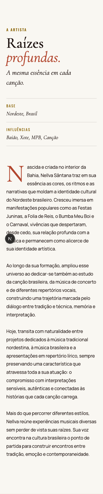
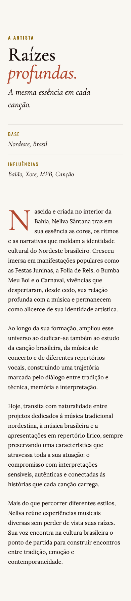
Lora 17.075px, entrelinha 29.0275px; esquerda; sem hifenização ou overflow.
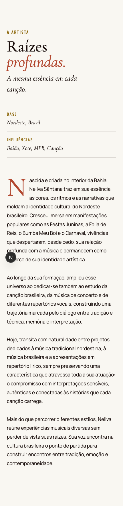
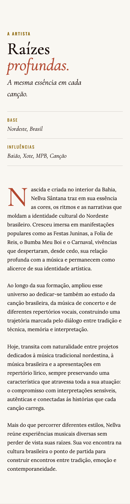
Lora 19px, entrelinha 33.25px; esquerda; sem hifenização ou overflow.
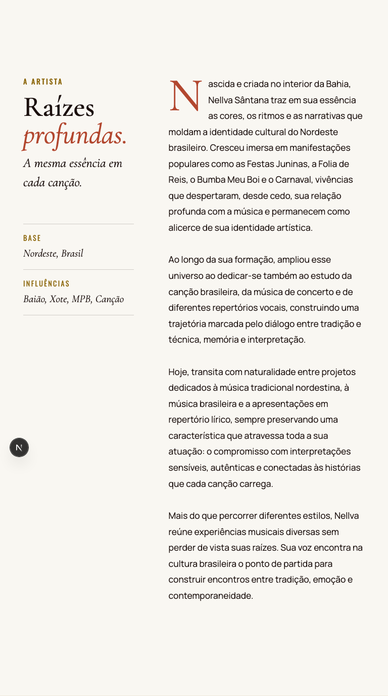
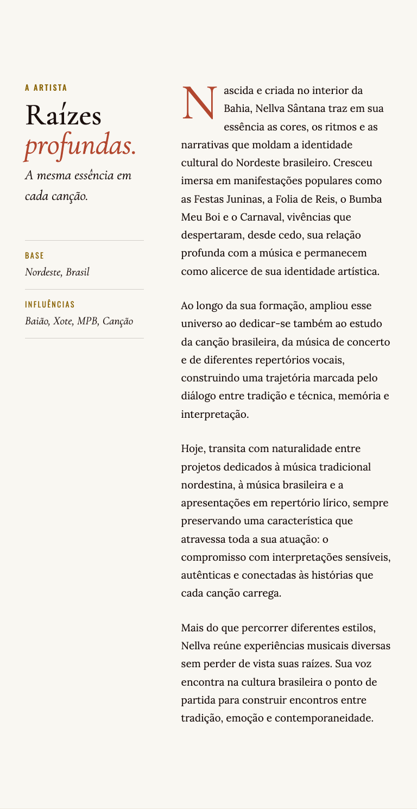
Lora 19.024px, entrelinha 33.292px; esquerda; sem hifenização ou overflow.
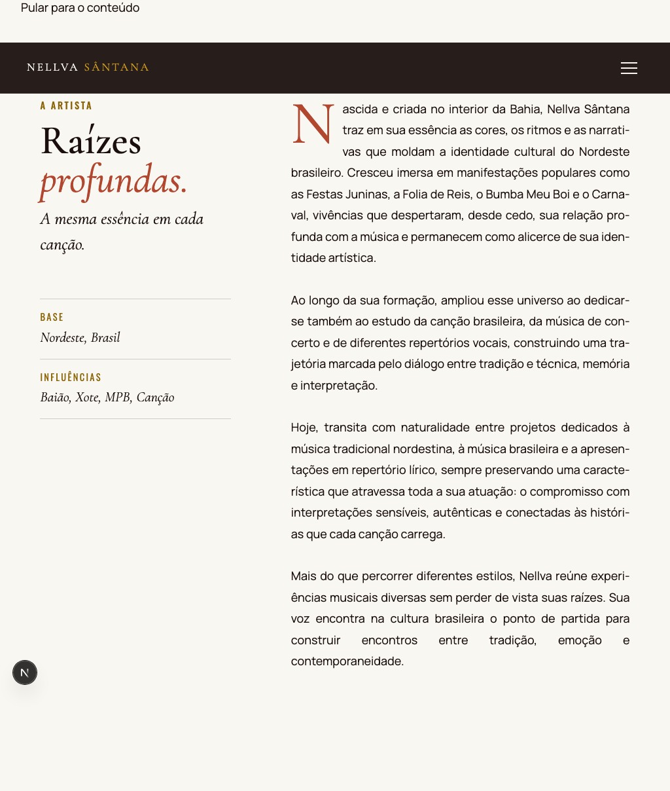
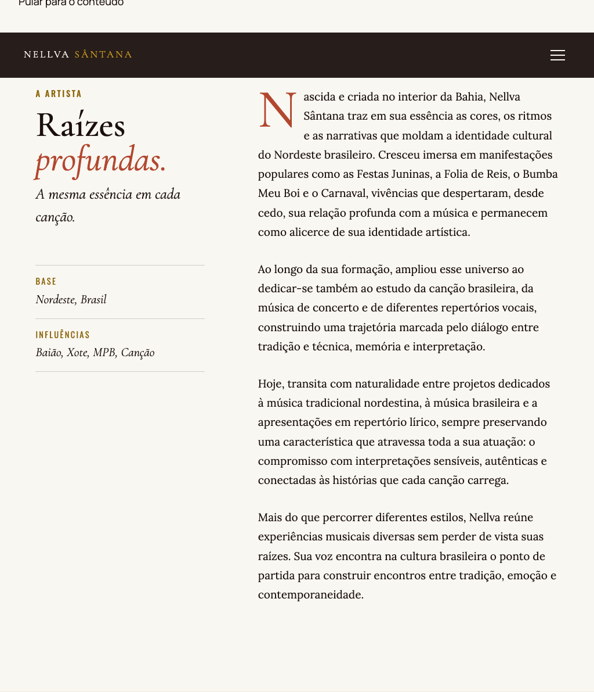
Lora 19.44px, entrelinha 34.02px; esquerda; sem hifenização ou overflow.
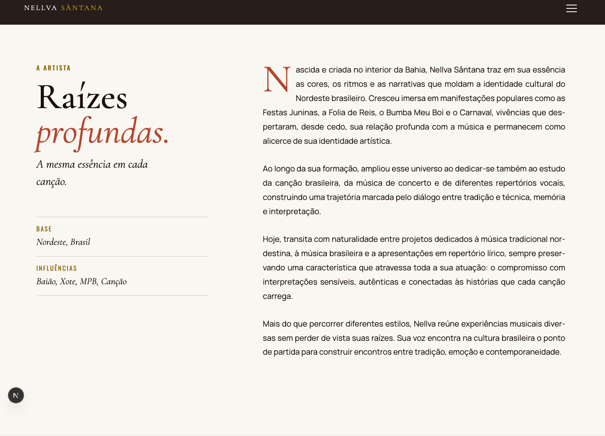
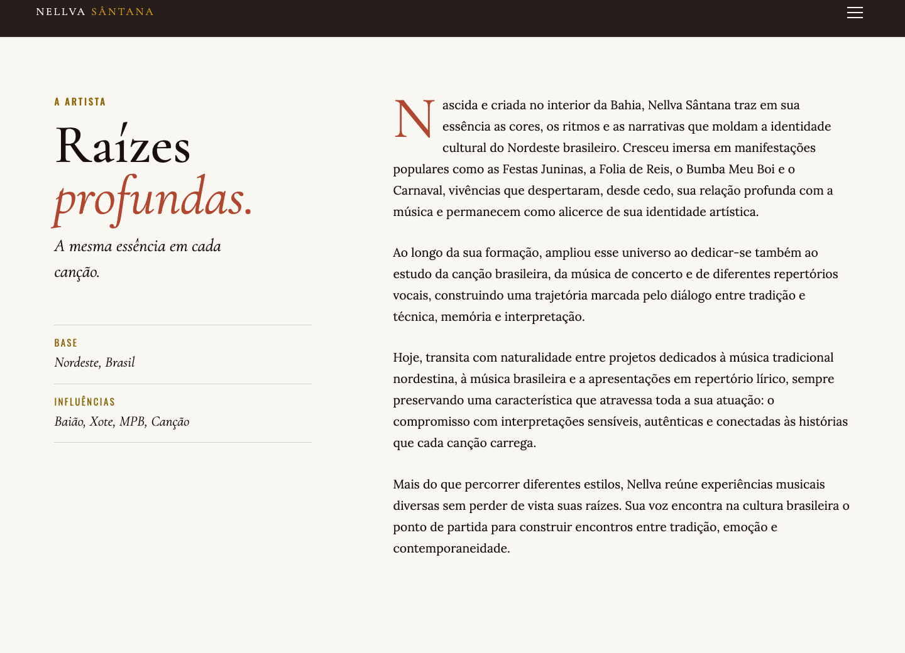
Lora 19.92px, entrelinha 34.86px; esquerda; sem hifenização ou overflow.
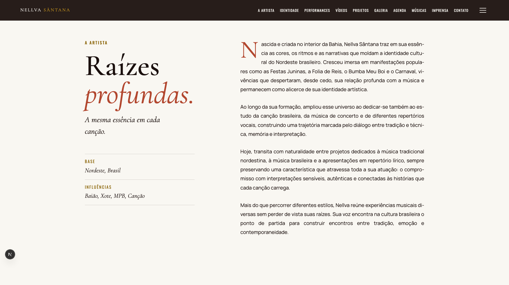
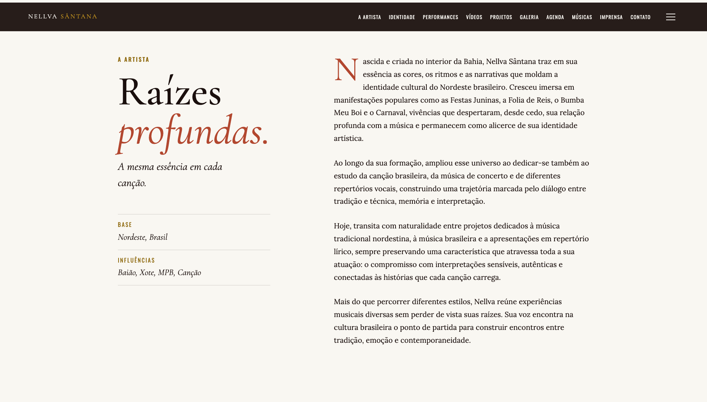